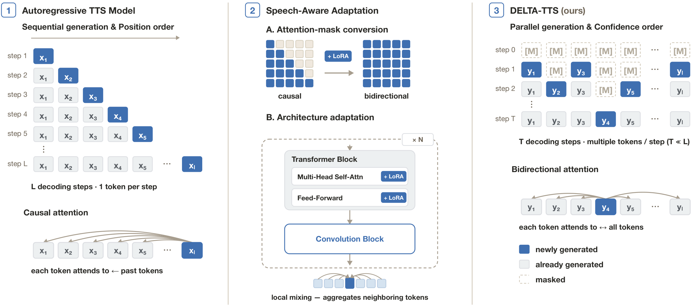

DELTA-TTS:
Adapting Autoregressive Model into Diffusion Language Model for Text-to-Speech
| NeurIPS 2026 |
1Sungkyunkwan University 2University of Seoul
Abstract. Autoregressive (AR) text-to-speech (TTS) models generate discrete speech tokens sequentially, which makes inference slow and can degrade robustness, since local errors propagate to later positions and can escalate into hallucination. This limitation stems from their left-to-right AR commitment: each token must be determined before future speech-token context is available. However, such ordering is not an inherent requirement for TTS, since the model receives the full input text before synthesis. In this paper, we introduce DELTA-TTS, a lightweight LoRA-based adaptation framework that converts a pretrained AR TTS model into a discrete diffusion language model (dLLM) for confidence-ordered speech-token decoding. To better capture the local structure of speech, DELTA-TTS incorporates a convolution module that injects local acoustic context, together with a 1/t-weighted training objective and a time-shifted inference schedule that together defer low-confidence positions to later steps. Trained on only 585 hours of LibriTTS, DELTA-TTS achieves a 1.75% WER on Seed-TTS test-en, outperforming its AR backbone while generating tokens 3.3 times faster. Further analysis shows that DELTA-TTS produces sharper text–speech alignment, increases overall decoding confidence, and mitigates the hallucinations observed in AR generation.
Contents
Model Overview

Zero-Shot TTS on Seed-TTS test-en
| Prompt | Text | Ground Truth | CosyVoice 3 (AR) | DELTA-TTS (Ours) |
|---|---|---|---|---|
| I pressed the button for my nurse, but he did not come. | Can we please leave now? | |||
| The fruit of a fig tree is apple shaped. | Rated M for mature. | |||
| The school is considered to be both economically and ethnically diverse. | Some resemble a tulip or a goblet. | |||
| The island's southern end connects by roadway to Padre Island. | Will you be happy when I am in the earth? | |||
| Many planes would be lost if they could not see their carriers. | In the grammars of many languages the two terms are used interchangeably. | |||
| Gum arabic is used primarily in the food industry as a stabilizer. | One variation assigns a point based on the pair rolled, rather than the singleton. | |||
| The western rim of Roche has been somewhat distorted and straightened. | The ninth member is the State Superintendent of Education who is ex-officio. | |||
| The east terrace would also have a roof added as part of this development. | Excessive efforts to control or exploit agents of influence can also have negative consequences. |
Zero-Shot TTS on LibriSpeech
| Prompt | Text | Ground Truth | VALL-E | CosyVoice 3 (AR) | DELTA-TTS (Ours) |
|---|---|---|---|---|---|
| They then renewed their journey, and, under the better light, made a safe crossing of the stable roofs. | They moved thereafter cautiously about the hut groping before and about them to find something to show that Warrenton had fulfilled his mission | ||||
| and says thou mother of my children i have loved thee and i have given thee a crown that none can take away | And lay me down in thy cold bed and leave my shining lot | ||||
| After early nightfall the yellow lamps would light up here and there the squalid quarter of the brothels. | Number ten fresh nelly is waiting on you good night husband | ||||
| she screamed and shouted too with a terrific volume of sound which doubtless caused the hearts of the fugitives to quake within them | Yea his honourable worship is within but he hath a godly minister or two with him and likewise a leech | ||||
| his hat had a peaked crown at a flat brim and around the brim was a row of tiny golden bells that tinkled when he moved | Instead of shoes the old man wore boots with turnover tops and his blue coat had wide cuffs of gold braid | ||||
| Oh, what a record to read! What a picture to gaze upon! How awful the fact! | The army found the people in poverty and left them in comparative wealth | ||||
| Choking with emotion, Leocadia made a sign to her parents that she wished to be alone with them. | Thus did this humane and right minded father comfort his unhappy daughter and her mother embracing her again did all she could to soothe her feelings | ||||
| Most of all, Robin thought of his father. What would he counsel? | He was in deep converse with the clerk and entered the hall holding him by the arm |
Prompts, ground truth and VALL-E samples are taken from the VALL-E demo page.